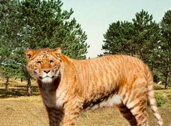

- HOME
- Algemeen
- Onderverdeling
- Uiterlijk
- Gedrag
- Zintuigen
- Ondersoorten:
- Siberische tijger
- Bengaalse tijger
- Sumatraanse tijger
- Indo-Chinese tijger
- Zuid-Chinese tijger
- Kaspische tijger
- Javaanse tijger
- Balinese tijger
- Hybriden:
- Lijger
- Teeuw
- Historisch:
- Sabeltandtijger
- Links

Relevante links:
- Teeuw
Een andere hybride van een leeuw en een tijger. - Felidae
Over de familie van de tijger, de katachtigen. - Geboorte lijgerwelpjes*
Beelden van kort na de geboorte van 2 lijgerwelpjes. - Lijgers zijn onnatuurlijk*
Verslag over het kweken van lijgers. - Lijgerwelpjes*
Filmpje over pasgeboren lijgerwelpjes.
De lijger
Panthera Tigris x Panthera Leo
Een hybride is een dier dat geboren is nadat 2 dieren van een verschillende soort met elkaar gepaard hebben. Doordat de ouders dus van een andere soort zijn, zijn de mannelijke jongen onvruchtbaar (bij lijgers zijn de vrouwtjes wel vruchtbaar). Het vrouwtje kan dus enkel nageslacht kweken door te paren met een leeuw of een tijger, het jong wordt dan een le-lijger respectievelijk een ti-lijger. De lijger kan zich als soort dus niet voortplanten (dit is o.a. ook de reden waarom leeuwen en tijgers een verschillende soort zijn).
Een lijger is, in tegenstelling tot de teeuw, de welp van een mannetjesleeuw en een vrouwtjestijger.
Het dier lijkt sterk op een leeuw maar heeft de typisch gestreepte vacht van een tijger. Bovendien houdt hij van zwemmen, wat een leeuw absoluut niet doet.
Een lijger kan bovendien veel groter worden dan de leeuw en de tijger, omdat het gen dat de groei bepaalt bij de lijger 'minder aanwezig' is (wat wil zeggen dat het product van de genen een groter dier genereert).